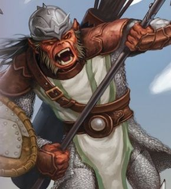
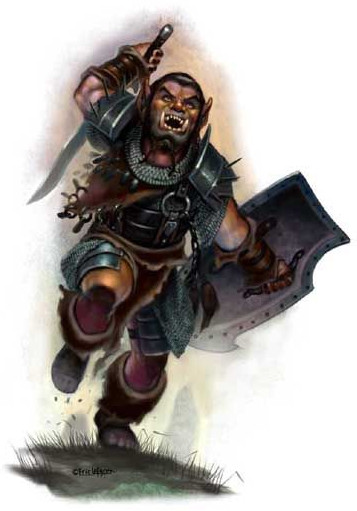
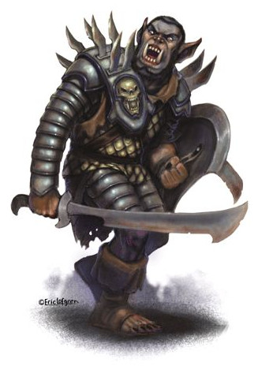

Les hobgobelins
Le guerrier hobgobelin moyen est une créature prompte à répandre la peur dans le cœur de tout humain, nain ou elfe normal.
Physiologie
Hauts de près de 2 mètres, les hobgobelins ont une musculature bien développée et sont étonnamment agiles pour leur stature. Bien que plus proches des gobelours pour ce qui est de la taille et du poids, les hobgobelins sont physiquement plus comparables dans leur forme aux gobelins, plus petits. Leur nez aplati et leurs oreilles pointues leur donnent d'ailleurs un aspect presque félin qui les définit incontestablement comme de proches cousins des gobelins. Un observateur ne craignant pas pour sa vie pourra néanmoins remarquer quelques différences, comme le fait que leurs armes et leurs armures sont particulièrement bien soignés, parfois même polies, malgré la nature primitive de leurs propriétaires.
Les rares études n'ont pu démontrer de quelconque supériorité intellectuelle des hobgobelins sur les gobelins. C'est leur agressivité naturelle et leur discipline innée qui leur permet d'accomplir beaucoup plus, dans le sens où leurs tribus sont en mesure de dominer toutes sortes de créatures, même celles physiquement plus fortes. Leurs sens très développés, héritage de leurs origines gobelines, sont de loin supérieurs à ceux des humains, et presque comparables à ceux des elfes. Mais taille, poids et puissance musculaire mis à part, la différence déterminante entre les hobgobelins et les autres gobelinoïdes, physiologiquement parlant, est leur manque relatif de discrétion. Gobelins et gobelours présentent une habileté à utiliser l'ombre ou les aspérités du terrain pour masquer leur approche vers leurs ennemis, mais la plupart des hobgobelins sont simplement incapables d'agir de la sorte. C'est cette carence qui à elle seule a permis aux gobelins de ne pas être entièrement asservis par les hobgobelins.
Physiquement, la femelle hobgobelin est très similaire à son homologue masculin, et il est souvent difficile pour un non initié de distinguer un mâle d'une femelle lorsque celle-ci porte une armure complète. Une femelle hobgobelin peut être respectée comme un guerrier pour ses aptitudes martiales mais son devoir premier, celui de fournir à la tribu de nouveaux guerriers potentiels, ne sera jamais récompensé : en élevant les plus jeunes, son aptitude au combat, et donc son rang tribal, tend à disparaître.
Différences physiques
Hobgoblins have dark orange or red-orange skin, and hair ranging from dark red-brown to dark gray. Yellow or dark brown eyes peer out beneath their beetling brows, and their wide mouths sport sharp and yellowed teeth. A male hobgoblin might have a large blue or red nose, which symbolizes virility and power among goblinkin. Hobgoblins can live as long as humans, though their love of warfare and battle means that few do.
Les hobgobelins ont tendance à présenter les mêmes types de variations physiques au sein de l'espèce que les autres gobelinoïdes en matière de cheveux, de peau et de couleur des yeux. Généralement, leur peau est d'un rouge orangé plus ou moins foncé selon les individus, tandis que les poils qui la recouvrent, à l'exception des mains et du visage, varient typiquement du brun-roux au gris sombre. Leurs yeux prennent des teintes allant du jaune au brun noisette. Ces variations de couleurs ont tendance à se reproduire à l'identique au sein d'une même tribu, et ceux qui font exception sont souvent traités comme inférieurs et inévitablement mis à l'écart. Leur espérance de vie s'en trouve alors considérablement réduite.
La combinaison de la peau foncée et des yeux rouges est extrêmement rare et, plutôt que d'être considérés comme des parias, les hobgobelins de ce type bénéficient généralement d'un statut plus élevé au sein de la structure tribale. Les hobgobelins représentent souvent leur dieu protecteur Maglubiyet portant ces couleurs et il est donc naturel de penser que ces individus ont été touchés par le dieu et qu'il veille sur leur destinées. Ceux-ci deviennent souvent des adeptes ou des chamans au sein de la tribu. Les mâles de grande taille arborent souvent un nez pâle développant une teinte bleue ou rouge. La cause de ce changement de couleur et le processus de son développement ne sont pas connus, mais il s'agit certainement d'un phénomène naturel plutôt que d'une décoration artificielle. Ces colorations, qui deviennent plus audacieuses alors que le mâle se développe physiquement, le rendent plus attrayant pour les hobgobelins femelles et ainsi augmentent ses chances d'accouplement.
Cycle de vie
Hobgoblins have a long history of training animals to service. Like the more civilized races, they use oxen and horses to transport goods and weaponry over long distances. They communicate with each other using trained ravens, and keep vicious wolves to guard prisoners and protect hobgoblin camps. Hobgoblin cavalry use trained worgs as steeds, in the same way that goblins ride wolves. Some tribes even keep carnivorous apes as fighting beasts.
La vie d'un hobgobelin tourne autour de trois choses : manger, faire la guerre et parvenir à un statut important au sein de la tribu. On attend des individus qu'ils œuvrent pour le bien de la tribu et ils sont récompensés pour cela. Il est intéressant de constater que, bien que les jeunes soient protégés et considérés comme incarnant l'avenir de la tribu, le rôle de la maternité ne donne pas un grand statut. D'ailleurs, les hobgobelins n'ont aucune notion de relations à long terme, et bien qu'une femelle particulièrement faible puisse être considérée comme la propriété d'un mâle fort, en général, elle sera à même de choisir son compagnon à des fins de reproduction.
La période de gestation d'une hobgobeline est de six mois et elle peut généralement donner naissance à deux ou trois enfants. Et bien que la vie dans une tribu hobgobeline soit souvent dure, il n'est pas rare que plusieurs d'entre eux parviennent à l'âge adulte. Les jeunes hobgobelins se développent alors rapidement et sont capables de lutter fermement dès l'âge de six ans, pouvant facilement mettre en échec un membre non guerrier d'une race civilisée. Les jeunes sont considérés comme des adultes vers l'âge de onze ou douze ans, et rejoindront alors les autres guerriers de la tribu. Les hobgobelins peuvent vivre jusqu'à soixante voire soixante-cinq ans, mais il est extrêmement rare qu'ils atteignent cet âge. La plupart meurent beaucoup plus tôt au combat ou succombent aux maladies, et seuls les adeptes et les prêtres ont de réelles chances d'atteindre ces grands âges, car leur rang élevé et leurs pouvoirs leur confèrent une plus grande protection.
Alimentation
Si les gobelinoïdes sont connus pour leur capacité à subsister durant de longues périodes avec à peu près n'importe quelle matière organique à portée, les hobgobelins semblent être un peu plus raffinés et, si possible, ne se nourrissent que de viande et d'eau. La viande de cheval est l'une de leurs préférées et constitue l'objectif de nombreux raids, principale source de nourriture pour une tribu. Toutefois, lorsque la viande est rare, les hobgobelins sont capables de digérer une incroyable panoplie de denrées, et tournent même leur dévolu sur des aliments périmés à l'occasion. Cependant, ils évitent à tout prix les charognes et, fait intéressant, le cannibalisme est fui comme la peste, bien que ce soit une pratique courante chez les gobelins notamment.
Habitat
Les hobgobelins ont en commun avec ce fléau que sont les races gobelinoïdes le fait de se retrouver dans pratiquement tous les environnements du monde. Cependant, étant un peu moins prolifiques que leurs cousins gobelins, ils craignent les climats extrêmes, bien trop conscients des dangers souvent inutiles que peuvent représenter les déserts arides ou les glaciers polaires. Bien qu'un aventurier puisse rencontrer des tribus d'hobgobelins dans de telles régions, il est probable qu'elles n'y soient présentes qu'à cause de circonstances des plus désastreuses. En général, les hobgobelins préfèrent donc les zones plus tempérées, les forêts et les montagnes basses étant leurs zones favorites. Les prairies ouvertes sont généralement boudées, même s'ils peuvent s'y rencontrer lorsqu'ils voyagent d'une tanière à une autre. Ils sont très précautionneux quand ils choisissent un lieu pour leur tanière, et sélectionneront de préférence une zone qui fournit un grand nombre de cachettes ou qui est extrêmement difficile à atteindre par un ennemi, d'où le nombre de tanières trouvées dans les forêts ou les montagnes. Là où ce n'est pas possible, les hobgobelins recherchent des lieux protégés ; forts en ruines, réseaux de galeries souterraines ou systèmes de tunnels sont des choix populaires.
Bien que les hobgobelins ne soient pas de nature nomade, leurs tribus sont connues pour migrer d'une zone à une autre pour chercher des terres plus prospères. Deux principales circonstances provoquent cette migration. La première, la tanière de la tribu est installée dans une zone qui est devenue trop dangereuse pour y rester, que ce soit à cause d'une catastrophe naturelle ou bien d'une résistance déterminée aux raids perpétuels de la tribu. Une autre tribu gobelinoïde plus puissante peut également être la cause d'une migration, si la tribu résiste aux premières rencontres. La seconde raison, la plus fréquente, est que la tribu a épuisé les ressources de la région, ce qui la pousse à chercher une autre zone plus généreuse. À moins d'un désastre imminent, le chef tribal ne risquera jamais toute sa tribu en l'envoyant vers l'inconnu. Au lieu de cela, de petites bandes d'éclaireurs, ne comptant pas plus de cinq ou dix des meilleurs guerriers de la tribu, seront envoyées pour localiser et informer des sites possibles pour une nouvelle tanière. De tels groupes prendront des mesures pour éviter le combat direct, se concentrant sur la recherche d'un nouvel endroit qui pourra accueillir toute la tribu.
Il y a plusieurs facteurs clés que les hobgobelins vont considérer pour trouver un nouveau repaire. Le plus important est que le nouveau lieu et ses environs doivent pouvoir subvenir aux besoins en nourriture et en approvisionnement de toute la tribu. Les tribus hobgobelines les plus grandes comptent plus de trois cents guerriers, et près de deux fois plus de jeunes. La recherche d'un nouvel emplacement n'est donc pas une tâche aisée. Les éclaireurs rechercheront particulièrement des fermes et des villages nombreux et faiblement défendus, des ressources naturelles abondantes ou bien encore d'autres tribus de gobelinoïdes plus petites, que les hobgobelins pourront commencer à dominer et réduire en esclavage. Les éclaireurs essaieront également de sentir où se trouve le pouvoir dans la nouvelle région ; bien que les hobgobelins vivent pour faire la guerre, ils ne sont nullement fous et éviteront les tribus plus fortes ainsi que les lieux civilisés dotés d'armées professionnelles. La défense de la tanière est de la plus haute importance, donc les éclaireurs vont aussi tenter d'identifier des zones qui pourraient être rendues imperméables à tout ce qui ne serait pas une attaque, directe et très périlleuse, par une quelconque armée de grande taille.
Une fois qu'un site convenable a été trouvé, une plus grande troupe, souvent menée par le chef tribal lui-même, sera envoyée pour prendre la nouvelle tanière et l'en débarrasser de ses habitants actuels. D'autres éclaireurs seront employés pour localiser des sources de nourriture et la construction des défenses, allant de simples barrières aux réparations des murs d'une forteresse en ruine, commencera. Ceci se fait rapidement car c'est à ce moment que la tribu est la plus vulnérable, n'ayant plus de tanière, ni la nouvelle ni l'ancienne, complètement défendues. Ensuite la principale préoccupation du chef de tribu sera de ramener le plus vite possible le reste de la tribu dans la nouvelle tanière, ne prenant pas plus de deux ou trois jours pour terminer les défenses préliminaires.
En plus des quelques guerriers de la première troupe, tous les guerriers de la tribu seront employés pour protéger le déplacement des jeunes et des biens de la tribu lors de leur trajet vers la nouvelle tanière. Généralement, un chef tribal ne s'éloignera pas à plus de cinquante ou soixante miles lorsqu'il se déplace de cette façon, et la réimplantation de la tribu entière, du repérage initial jusqu'à l'abandon de la vieille tanière, ne prendra pas plus d'une semaine. Le déplacement étant un moment critique pour la tribu, les traînards ne sont pas tolérés et tout hobgobelin à la traîne sera abandonné, livré à lui-même.
Une fois la tribu installée dans la nouvelle tanière, toutes les races voisines remarqueront immédiatement la présence des nouveaux arrivants. Les groupes de raid sont immédiatement formés et commencent à harasser leurs voisins pour s'approprier leurs ressources. Ces raids sont les premiers moyens de subsistance des hobgobelins et, puisque les réserves de nourriture seront probablement basses après le changement de tanière, les hobgobelins seront vigoureux dans leurs tentatives de réapprovisionner leurs stocks, les chevaux et le bétail étant leurs principales cibles. Les défenses protégeant la tanière seront aussi retravaillées et rehaussées, devenant encore plus élaborées et, selon les standards gobelinoïdes, plus sophistiquées. Des murs, des tours de gué et souvent même de petits engins de guerre seront construits pour se prémunir d'attaques obligeant les hobgobelins à se déplacer encore une fois. Une fois la tribu établie dans une nouvelle zone, un processus constant de guerre et de raids va commencer, avec uniquement deux buts : perpétuer l'existence de la tribu et la destruction ou la domination totale de toutes les formes de vie intelligentes autres que celle des hobgobelins.
Société
A hobgoblin measures virtue by physical strength and martial prowess, caring about nothing except the opportunity to demonstrate skill and cunning in battle. Hobgoblins of high military rank attain their positions by force, then hold those positions by imposing their authority through draconian measures.
La grande majorité des hobgobelins vivent en tribus, bien que des bandes de mercenaires indépendants soient également communes. Les tribus grossissent régulièrement lorsque les temps sont prospères, chaque hobgobelin ayant ses propres tâches spécifiques à accomplir, même si tout mâle adulte est considéré en premier lieu comme un guerrier. Une tribu typique va compter en moyenne autour de cent cinquante guerriers, bien qu'elle puisse atteindre le double dans des zones avec de nombreuses ressources ou lorsque deux tribus s'affrontent et, éventuellement, se convertissent en une seule à la fin, le vainqueur absorbant le vaincu. Il y aura aussi de nombreux non-combattants, tels que des blessés, des enfants et des femelles, triplant à peu près la taille de la tribu.
Bien qu'il puisse y avoir d'infinies variations entre tribus en termes de tanière, d'équipement, de culture spécifique et de ressources, toutes adoptent une hiérarchie de dominance dirigée par un chef tribal supérieur qui est reconnu comme le meilleur guerrier d'entre tous et qui a probablement atteint cette position à la force des armes. Toute l'autorité au sein de la tribu découle directement du chef et il (car il n'y a pas eu de cas répertorié de femelle devenant chef) maintiendra une main de fer sur les hobgobelins hiérarchiquement inférieurs. Directement situés sous le chef de tribu, à la fois en termes de rang et d'autorité, les seigneurs de guerre, combattants les plus aguerris de la tribu, sont des meneurs de troupes et des gardes du corps. Il y a généralement entre quatre et vingt seigneurs de guerre de cette sorte, selon la taille de la tribu, et ils sont notablement mieux équipés que l'essentiel des hobgobelins qu'ils dirigent. Le chef de la tribu choisit personnellement les guerriers pour ce poste, habituellement après un grand exploit dans une bataille, bien qu'un éclaireur repérant constamment des ressources à piller pour la tribu puisse obtenir un tel statut.
SURKA – LE DÉFI TRIBAL
Ce système de défis constitue l'un des plus remarquables aspects de la société hobgobeline, et l'éloigne un peu plus de leurs cousins gobelinoïdes. Toute dispute dans la tribu, depuis la propriété d'un cheval à la légitimité d'être à la tête de la tribu, sera résolue de deux manières. Soit le chef de tribu arbitrera les différends importants, sans laisser aucune place à une quelconque argumentation, soit un défi peut être lancé, si l'hobgobelin en question y est autorisé.
- Aucun hobgobelin qui n'est pas considéré comme un vrai guerrier ne peut en défier un qui l'est (en effet, un hobgobelin qui ne peut pas combattre pour quelque raison que ce soit n'a pas beaucoup de droits dans la structure de la tribu).
- Seul un seigneur de guerre peut défier le chef d'une tribu, et seulement pour vouloir se hisser à la tête de la tribu toute entière.
- Aucun hobgobelin ne peut défier un adepte. Ceux-ci sont en effet positionnés au-dessus de l'autorité de la tribu et il leur est interdit de lancer eux-mêmes un défi.
Il doit toujours y avoir des témoins lors d'un surka (ceci n'est pas difficile car ces défis attirent toujours une foule substantielle composée des membres de la tribu) et toutes les armes de corps à corps ou armures possédées par les protagonistes peuvent être employées.
Le surka s'achève toujours lorsque l'un des combattants cède face à son opposant. Après quoi, le sujet de la dispute est considéré comme définitivement clos. Ce qu'un hobgobelin va encaisser dans une telle épreuve est à son entière discrétion, il n'y a pas de honte à devoir s'avouer vaincu face à un guerrier plus fort. Dans l'esprit des hobgobelins, le fait qu'il y ait toujours un vainqueur et un vaincu dans une bataille est en parfait accord avec l'ordre naturel et leur manière de vivre.
Alors que les hobgobelins ont seulement un prémisse de système d'honneur martial, ils reconnaissent que les lois de la tribu doivent passer au-dessus de toutes choses. Lorsqu'un chef de tribu meurt, quelle qu'en soit la raison, son successeur sera issu des seigneurs de guerre, considérés de loin comme supérieurs au guerrier moyen de la tribu. Très rarement, les seigneurs de guerre atteingnent un consensus pour décider qui devrait être le chef naturel, mais cela peut être le cas si un des seigneurs de guerre est considérablement plus riche que les autres par exemple. En effet, pour un hobgobelin, posséder des nombreuses richesses signifie un grand nombre de victoires à la bataille, et donc que le plus riche est le plus talentueux à la guerre. Cependant, ce n'est pas la façon de faire habituelle puisque généralement les chefs de tribu prennent grand soin à maintenir une certaine égalité entre leurs seigneurs de guerre. À la place, des défis, comme le surka, seront organisés pour déterminer qui aura le droit de diriger la tribu. De manière pratique, ce système de défis garantit que toutes les disputes au sein de la tribu seront résolues rapidement et facilement, tout en s'assurant d'éviter des pertes de vie inutiles. Après tout, aucune tribu n'est grandie si ses membres se massacrent les uns contre les autres.
La seule exception à cela, c'est quand un seigneur de guerre lance un défi pour le contrôle de la tribu, et c'est une chose qu'aucun hobgobelin ne prendra à la légère. Les seigneurs de guerre et les adeptes sont les seuls membres de la tribu autorisés à conseiller le chef de tribu et à remettre en question ses ordres, bien qu'il soit entendu que la décision finale du chef prévale. Il y a plusieurs circonstances, cependant, où un seigneur de guerre peut décider de prendre des mesures extrêmes contre son chef de tribu, et ainsi tenter de le renverser pour prendre la position la plus élevée. Il peut sincèrement croire que les ordres peuvent irrémédiablement nuire à la tribu, ou il être devenu assez puissant pour croire qu'il peut vaincre son chef. Néanmoins, cette forme de surka est toujours un combat à mort et toute la tribu est appelée à y assister. Le but principal est que le chef, qui qu'il soit après le combat, soit incontesté dans ses revendications à diriger la tribu.
De ce fait, les assassinats ou tout autre acte suspect en dehors du surka (dans lequel des coups fourrés peuvent être utilisés à condition qu'ils soient portés en présence de témoins) sont extrêmement rares dans la société hobgobeline. Sans démonstration de sa prouesse martiale, il pourrait toujours y avoir des doutes sur la capacité d'un nouveau chef à gouverner correctement la tribu, et d'une manière qui profitera à tous. Cette mise en doute est la dernière chose qu'un chef voudrait, son pouvoir étant issu de sa position à la tête de la tribu.
Répartition des richesses
De par les raids et l'asservissement des autres races, une tribu hobgobeline peut amasser relativement rapidement une grande quantité de richesse. Les hobgobelins sont cependant une race pragmatique, et les biens matériels tels que les chevaux, les armes et les armures ont leur préférence par rapport aux concepts abstraits comme l'unité monétaire. Ceci étant dit, le troc et l'échange d'objets contre des pièces restent possibles entre les guerriers, et l'on retrouve un grand nombre de pièces d'or et d'argent dans la décoration de leurs armures.
Il est de la responsabilité du chef de répartir personnellement le butin pris au cours d'un raid et de remettre sa part à chaque guerrier qui y a participé. Le chef prendra pour lui-même entre un quart et la moitié du total, en fonction de la réussite du raid. Cependant, la tribu attend de lui qu'il subvienne aux besoins du groupe durant les périodes de disettes, et aussi qu'il accorde des récompenses supplémentaires à un guerrier qui aurait eu un comportement exceptionnel durant la bataille. De nombreux chefs se plaignent de ces dépenses, mais ils savent que leur position repose sur l'unité de la tribu, et qu'il n'y a pas de place pour des conflits internes. Les adeptes et les seigneurs de guerre reçoivent tous des parts plus ou moins égales, qui seront de trois à quatre fois plus importante que celles d'un guerrier du rang. Ceux qui ne peuvent combattre ne perçoivent rien.
Tribu en guerre
Hobgoblins organize themselves into tribal bands known as legions. In their martial society, every hobgoblin has a rank, from the powerful leaders and champions, to the rank-and-file foot soldiers, to the goblins that find themselves driven into the front lines at spear point. A legion is headed by a warlord with several captains serving under its command. A hobgoblin warlord is a ruthless tyrant more interested in strategy, victory, glory, reputation, and dominion than leading troops into battle.
En bataille ouverte, les hobgobelins forment des unités disciplinées appelées légions et dirigées par un seigneur de guerre rivalisant sans mal avec les formations des troupes humaines, naines ou elfiques. Lorsque plusieurs légions sont engagées en même temps dans une bataille, les jeunes adultes sont utilisés comme courriers pour transporter les ordres du chef de la tribu aux diverses unités. Ce dernier combattra avec une unité de gardes du corps composée de ses plus fidèles seigneurs de guerre. La tribu livrera rarement bataille sans un plan précis, et chaque guerrier aura connaissance de la tactique envisagée et de ce qui est attendu de lui. Cette méthode de guerre, loin d'être figée, rend les tribus hogobelines difficiles à vaincre sans des combattants supérieurs en qualité ou en nombre.
Il n'est pas rare qu'un repaire tribal soit attaqué, car dès que les hobgobelins commencent à s'attaquer à d'autres gobelinoïdes ou a des implantations civilisés, ce n'est qu'une question de temps avant qu'une armée ne soit levée pour les détruire. Dans la défense de leur repaire, les hobgobelins sont des plus dangereux. En complément du grand nombre de défenses que les tribus préparent, les chefs de tribu mettent en place un système que les humains ou les nains appellent ordre permanent. Chaque guerrier reçoit des instructions sur le long terme quant à où aller et quoi faire en cas d'attaque. De ce fait, quand l'alarme retentit, toute la tribu est mobilisée et prête à combattre en quelques instants. De plus, grâce à un réseau de sentinelles permanentes souvent positionnées dans des tours de guets, il est quasiment impossible de prendre un campement par surprise.
Chaque tribu hobgobeline a sa propre bannière, considérée comme une possession précieuse du chef de tribu. Le symbole est généralement une icône stylisée qui reflète le nom de la tribu et peut également décorer les boucliers de certains guerriers. Cette bannière tribale est gardée en lieu sûr dans les quartiers du chef au sein du repaire, et n'est réellement sortie que lors des batailles d'envergure où la majorité des guerriers combattront. Elle sera portée par l'un des seigneurs de guerre de l'unité de gardes du corps du chef. Le chef de tribu choisi personnellement son porteur, soit en récompense, soit en châtiment, en fonction du degré de vénération de la bannière au sein de la tribu. Cependant, il est connu dans la plupart des tribus que si le porteur perd la bannière, on ne s'attend pas à ce qu'il y survive. Pour terminer avec le sujet de la guerre, la cause la plus fréquente de surka contre un chef de tribu est une importante défaite en bataille. C'est certainement pour cela, que les chefs planifient du mieux qu'ils peuvent les batailles. Autre indication que les hobgobelins sont une race pragmatique.
Troupes mercenaires
En dehors des structures tribales habituelles, quelques hobgobelins forment des bandes de guerriers indépendantes, à la recherche de plus grandes batailles et de plus grandes victoires. Sans doute considèrent-ils le fait d'être payés pour faire la guerre comme un simple bonus.
Les troupes de mercenaires hobgobelines sont généralement composées de vingt à cent habiles guerriers ; il n'y a pas de place pour les jeunes et les blessés. Elles se forment habituellement soit à partir des restes d'une tribu démantelée, soit d'un groupe d'hobgobelins mécontents de leur chef. Incapables ou peu disposés à le défier, ils préfèrent partir simplement pour l'inconnu, mais résolus à survivre grâce à leurs compétences guerrières. Pour les autres membres de la tribu abandonnée, c'est par contre un acte de trahison impardonnable. Ils chasseront alors les fuyards, et s'ils les prennent, leur mise à mort sera longue et douloureuse.
Les mercenaires sont prêts à se battre pour quasiment n'importe qui, leurs employeurs les plus courants étant d'autres tribus gobelinoïdes ou orcs. Des humains peu scrupuleux voient aussi de la valeur dans la vision disciplinée de la guerre qu'on les hobgobelins. Mais lorsque des mercenaires hobgobelins sont employés aux cotés de troupes principalement humaine, leur nature guerrière comme leur délectation pour la viande de cheval peuvent créer des frictions incontrôlables avec les autres unités de l'armée.
Les mercenaires hobgobelins n'ont pas de préjugés quant à leurs employeurs et se battront littéralement pour qui pourra les payer. Ils peuvent facilement s'adapter à la vie hors des contraintes tribales et en viennent rapidement à comprendre la valeur de l'or et de la réputation. Il est plutôt rare, par exemple, qu'une troupe mercenaire hobgobeline trahisse intentionnellement son employeur, ne serait-ce que parce qu'ils réalisent qu'ils perdront toutes chances d'avoir d'autres emplois. Par un service régulier et leur compétence aux combats, les hobgobelins amassent de l'or, qui peut alors être dépensé en armes, armures et chevaux, qui restent d'ailleurs leurs vraies passions.
La structure d'une troupe de mercenaires est similaire à celle d'une tribu : le capitaine en chef (qui pourrait se faire appeler seigneur de guerre après plusieurs engagements réussis) commande à plusieurs sergents qu'il aura sélectionné. Ces derniers ont autorité sur les guerriers du rang. Solde et butin de pillage sont aussi répartis comme dans une tribu, le capitaine en récoltant jusqu'à la moitié. Mais on attend de lui qu'il équipe ses guerriers, et ceci, quelles que soient les circonstances. Les capitaines les plus aventureux vont même jusqu'à équiper leur troupe de chevaux de monte une fois qu'ils ont compris combien cela coûte d'engager une troupe de cavalerie. Dans les faits, la cavalerie hobgobeline est plus fréquente chez les mercenaires que dans les tribus.
Toute troupe de mercenaires possède sa bannière qu'ils emmènent à la bataille. Elle est d'une plus grande importance qu'au sein d'une tribu. Pour un mercenaire hobgobelin, la bannière de sa troupe est le symbole de sa fierté, et si elle est capturée, il combattra férocement pour la reprendre. En plus d'être l'emblème de la troupe, représentant son nom, elle portera aussi des images stylisées de leurs plus grandes victoires, faisant ainsi de la bannière une mesure « directe » de la valeur et des accomplissements de la troupe. Lorsqu'il négocie avec de futurs employeurs, un capitaine apportera toujours sa bannière, portée par un puissant et intimidant guerrier, comme preuves des réussites de sa troupe au cours de son histoire.
Religion
Hobgoblins worship Maglubiyet the Mighty One, the greater god of goblinoids. As terrifying as this figure is, hobgoblins don't fear death, believing that when they die in battle, their spirits join the honored ranks of Maglubiyet's army.
Les hobgobelins ne sont pas très portés sur la chose religieuse, et bien qu'ils se situent tous sous Maglubiyet, la divinité gobelinoïde aussi connue sous le nom du Tout Puissant, ils n'offrent rarement à leur dieu plus qu'une simple pensée, jusqu'à ce qu'un véritable désastre frappe la tribu. Mais même alors, ce n'est bien souvent que pour rendre le Tout Puissant coupable de leur malheur.
Toutes les tribus n'ont pas des adeptes pour servir les rares besoins spirituels des hobgobelins, et celles qui en ont en comptent rarement plus d'une demi-douzaine. Les adeptes ont tendance à se positionner en dehors de la chaîne d'autorité qui traverse la tribu et sont considérés comme intouchables au regard du surka et des punitions. Même les plus irrévérencieux des chefs ne sont pas disposés à courir le danger de s'attaquer à un hobgobelin auquel le Tout Puissant a directement accordé des pouvoirs surnaturels. En fait, les adeptes sont principalement utilisés de deux façons dans une tribu. En premier lieu, lorsqu'il est confronté à un problème particulièrement difficile, un chef peut aller consulter ses adeptes pour obtenir des conseils, même s'il n'accordera que peu de valeur à ce qu'ils lui diront et ne se sente pas contraint d'obéir à leurs paroles. Deuxièmement, tous les adeptes sont censés utiliser leurs pouvoirs surnaturels pour le bien de la tribu, dans la bataille comme dans la vie quotidienne des hobgobelins, afin de leur faire surmonter les épreuves et les obstacles qui se dressent face à eux.
Pour leur part, les adeptes hobgobelins sont des adorateurs relativement piètres du Tout Puissant et certains soupçonnent même secrètement que les pouvoirs qu'ils possèdent proviennent de leur for intérieur plutôt que de la canalisation avec un dieu quel qu'il soit. Cependant, ils sont toujours désireux de conserver leur statut au sein de la tribu, lequel leur accorde un pouvoir immédiat et les garde à l'écart de tout travail physique. Ce manque de devoir envers le Tout Puissant semble pourtant rester impuni car les adeptes hobgobelins ne sont pas moins habiles que leurs homologues gobelins. On ne peut alors que présumer que, de par leur existence même, les hobgobelins participent au grand schéma que le Tout Puissant nourrit pour l'ensemble des gobelinoïdes.
Tous les adeptes au sein d'une tribu sont considérés de même rang, indépendamment de leurs compétences. Les luttes de pouvoir entre eux sont rares, mais peuvent se produire, surtout si le chef est assez fou pour démontrer un favoritisme particulier. Ces luttes sont généralement ignorées par le reste de la tribu, mais si d'autres hobgobelins sont amenés à aider un adepte ou un autre, le chef est susceptible d'intervenir et de résoudre le problème en imposant son autorité, incontestée.
Les clercs sont extrêmement rares dans une tribu d'hobgobelins ; peut-être une sur vingt possède un clerc doté d'une réelle puissance. Possédant beaucoup plus de compétences et de pouvoirs qu'un simple adepte, les clercs hobgobelins sont des fidèles fanatiques du Tout Puissant. Le mandat auto-déclaré du clerc de faire appliquer le plus infime des désirs du Tout Puissant peut facilement mener à des confrontations directes avec le chef d'une tribu. Tous les adeptes de la tribu se rangeront probablement aux côtés du clerc plutôt que du chef, et cela peut créer une faction puissante qui peut déstabiliser toute la structure d'une tribu. Bien que considéré comme ne faisant partie de la tribu aux yeux de la loi, un très puissant clerc peut appeler à un surka contre le chef s'il croit que celui-ci est faible et, s'il réussit, devenir chef lui-même. Ce n'est toutefois pas un phénomène courant car nombre de clercs pensent que le fonctionnement d'une tribu n'est pas de leur ressort, et ils ne le feront que s'ils ont besoin de contrôler directement chaque hobgobelin, ou s'ils croient que c'est ce que le Tout Puissant leur demande.o.
Il est encore plus rare pour un clerc hobgobelin de suivre une autre divinité que le Tout Puissant. Ces clercs ont tendance à être les hobgobelins les plus fanatiques qu'un aventurier puisse avoir le malheur de rencontrer, leurs rages sanglantes au cœur de la bataille étant un véritable phénomène. Ils sont susceptibles d'avoir pris la direction de leur tribu dans un but très précis, en accord avec les souhaits de leur dieu. Cela peut conduire à des tribus d'hobgobelins agissant de manière très différente d'une tribu normale.
Traduit par Arocka, Antoine, Papyrolf et blueace